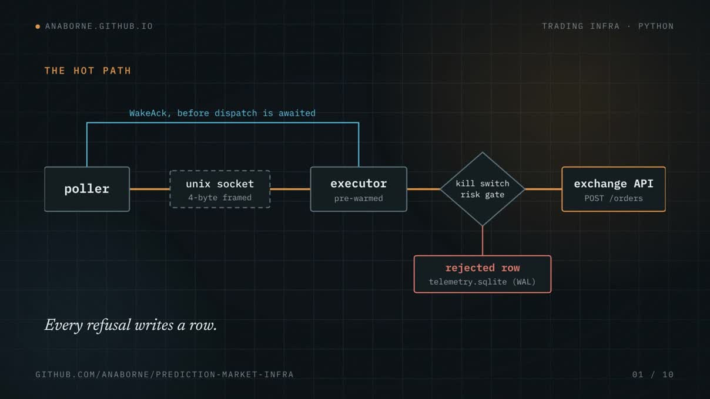

Kalshi / Polymarket Trading Infrastructure
Python · asyncio · uvloop · SQLite · Unix domain sockets
mypy --strict
ruff clean
395 tests
public extraction

A two-process trading system for Kalshi and Polymarket: a poller that decides what to do, and a pre-warmed executor that owns how (order count, time-in-force, self-trade prevention), connected over a Unix domain socket so unbounded decision work never contends with the event loop that actually submits an order.
Evidence architecture, 4 findings, 1 caveat
- Chose uvloop over stock asyncio on a measured benchmark. Latency is a property of the machine that runs the code, so every run is committed to
benchmarks/history.csvwith its platform tag and a clone prints its own numbers. On the most recent committed run, wake_recv p50 falls from 0.0059ms to 0.0045ms under uvloop. - Designed an IDF-weighted inverted index that prices a full two-venue cross by cutting a ~1B-pair search space to ~63K scored candidates.
- Root-caused a position-cap defect that had rejected 4,233 valid orders over 23 hours against zero open positions; replaced the counter-based estimate with live exchange-position reconciliation at no added API cost.
- Runs strategy searches as pre-registered experiments, with criterion, sample size, and stopping rule fixed before data, and kills each on its own evidence.
What the benchmark measures
Both benchmarks in the repo generate their own data and need no credentials and no network: RSA-PSS signing timed against an ephemeral keypair, and a real poller → socket → executor round trip against a fake venue client. The numbers above the fold come out of those benchmarks on a clean clone. End-to-end detect→fire on the live system needs a signed round trip to a demo account, so it is not published here.